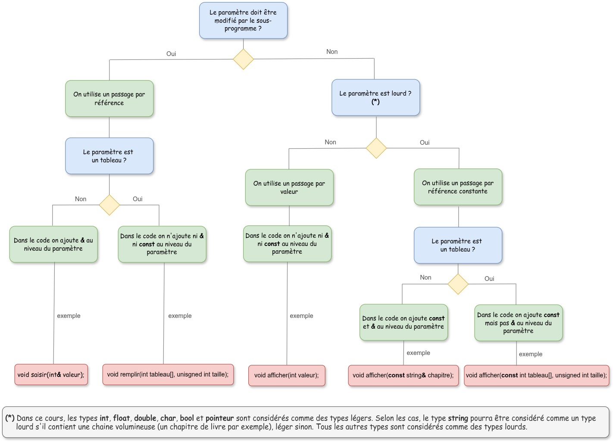

1. Les Slides Officielles des Sous-Programmes
2. L'ARBRE OFFICIEL DU MODE DE TRANSMISSION DES PARAMÈTRES (Moodle UPPA)
Voici le document officiel de M. Etcheverry pour choisir entre passage par valeur et passage par référence :

Fiche pratique officielle — R1.01 Initiation au développement — Université de Pau et des Pays de l'Adour
3. Procédure vs Fonction : Quand Choisir Quoi ?
| Critère | Procédure (08-procedures) | Fonction (09-fonctions) |
|---|---|---|
| Rôle Principal | Réaliser une action modifiant l'état du système (I/O, mise à jour, affichage). | Calculer et retourner une valeur unique typée. |
| Valeur de retour en C++ | Type void (aucune valeur retournée directement). |
Type explicite (int, double, bool, string) avec instruction return. |
| Usage typique | afficherMenu(), saisirNote(note), echanger(a, b) |
calculerPerimetre(rayon), estPair(n) |
4. Les 3 Modes de Transmission de Paramètres en C++
-
1. Paramètre en Entrée Pure (
in) $ ightarrow$ Passage par Valeur (ou Référence Constante) :
Le sous-programme a besoin de lire la valeur de la variable sans la modifier. Une copie locale est transmise.
En C++ :void afficher(int valeur);
Pour les types volumineux (structures, tableaux) :void afficherGrand(const string& texte);(C++ Core Guideline F.16). -
2. Paramètre en Sortie Pure (
out) $ ightarrow$ Passage par Référence (&) :
Le sous-programme produit une valeur et doit la transmettre à l'appelant via le paramètre.
En C++ :void saisirValeur(int& resultat); -
3. Paramètre en Entrée/Sortie (
inout) $ ightarrow$ Passage par Référence (&) :
Le sous-programme reçoit une variable avec une valeur initiale, et la modifie sur place.
En C++ :void echanger(int& a, int& b);(C++ Core Guideline F.17).
5. Recommandations Officielles C++ Core Guidelines (F.16 & F.17)
- Règle F.16 : « For "in" parameters, pass cheaply-copied types by value and others by reference to const. »
- Règle F.17 : « For "in-out" parameters, pass by reference. »
- Règle F.20 : « For "out" output values, prefer return values over output parameters. » (Si un sous-programme produit un seul résultat, préférez une fonction avec
returnplutôt qu'un paramètre par référence).